E 4.5.1. Calcule o valor de 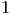 para o qual o problema
 e 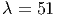.
e 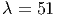.
E 4.5.1. Calcule o valor de 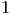 para o qual o problema
e 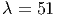.
Resposta. 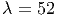, para 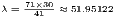: , 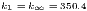. Para :  ,
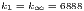.
,
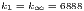.
Resposta. , 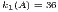, . 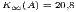
Resposta. e 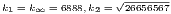 e 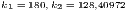
E 4.5.4. Usando a norma , calcule o número de condicionamento da matriz
Resposta. 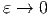. Quando 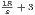, a matriz converge para uma matriz singular e o número de condicionamento diverge para 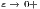.
Resposta. As soluções são 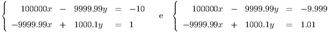 e 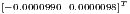. A grande variação na solução em função de pequena variação nos dados é devido ao mau condicionamento da matriz (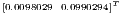).
Exemplo de implementação:
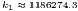
E 4.5.6. Considere os vetores de 10 entradas dados por

 e
e  de e
de e
Resposta. 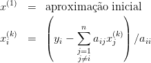; 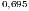; 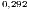; 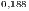; 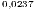; 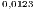
Exemplo de implementação: